10강 · 8월 17일 (월) 수업
측정부터 분석까지
오늘은 직접 측정한 데이터로 끝까지 가 봅니다. 자기장을 재서 CSV로 내보내고, 코랩에서 읽고, 회귀로 물리 법칙을 찾아냅니다.
오늘 할 수 있게 되는 것
- MagProbe로 격자 9칸을 재서 CSV로 내보낼 수 있다
- 파일 이름을 규칙대로 붙일 수 있다
- 코랩에서 CSV를 읽고 정리할 수 있다
- 학습 데이터와 테스트 데이터를 구분할 수 있다
- 거리 지수를 회귀로 찾고, 그 값이 왜 그런지 설명할 수 있다
오늘의 흐름
네 단계입니다. 하나씩 천천히 갑니다.
격자 9칸을 재고 CSV로 내보내기
규칙대로 붙여서 모으기
읽고, 회귀 돌리고, 해석하기
MagProbe 장치 · 노트북(크롬) · 막대자석 1개 · 자 · 받침대(6cm, 10cm) · 구글 계정
먼저 · 좌표를 약속합니다
센서를 아무 데나 놓으면 나중에 비교를 못 합니다. 미리 정한 9칸에서만 잽니다.
MagProbe 화면에는 번호 대신 좌표가 적혀 있습니다. -40,40 이 1번, 0,0 이 5번, 40,-40 이 9번입니다. 헷갈리면 위 그림을 보세요.
MagProbe 사용법
브라우저에서 바로 씁니다. 크롬으로 여세요. lhc0312.github.io/magprobe
처음 열면 이런 화면입니다.
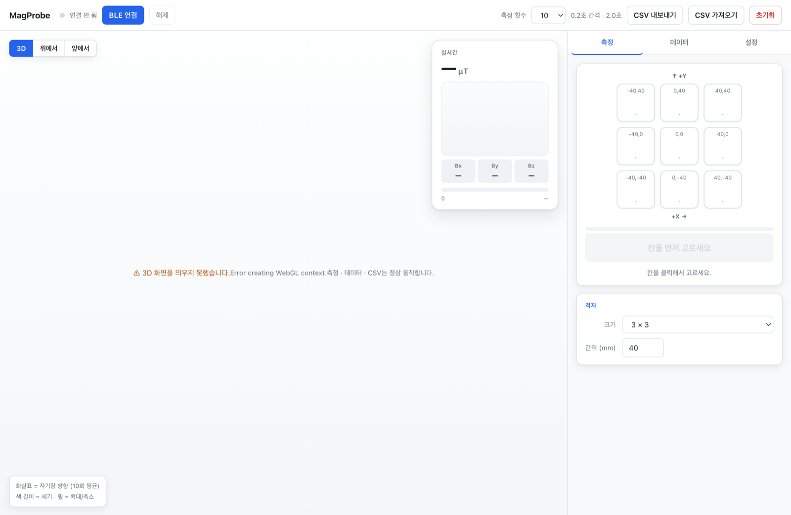
1BLE로 장치를 연결합니다
화면 맨 위 줄에 연결 버튼이 있습니다.
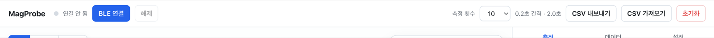
할 일 — 파란 BLE 연결 버튼을 누릅니다.
창이 뜨면 목록에서 우리 장치를 고르고 페어링을 누릅니다.
왼쪽 점이 초록색으로 바뀌면 성공입니다.
크롬인지 확인하세요. 사파리·파이어폭스는 웹 블루투스를 지원하지 않습니다. 그리고 노트북 블루투스가 켜져 있어야 합니다.
2격자를 확인합니다
오른쪽 측정 탭 아래에 격자 설정이 있습니다.
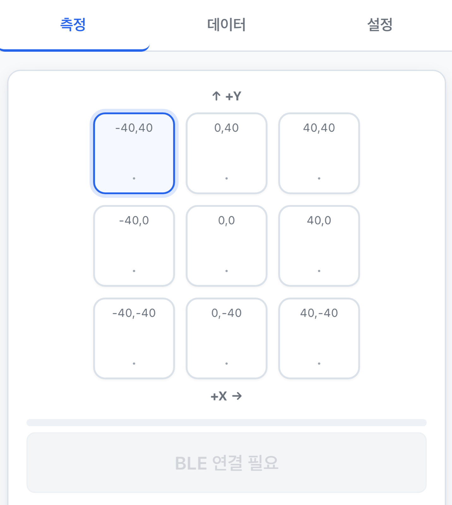
확인만 — 크기가 3 × 3, 간격이 40 인지 봅니다. 기본값이 그렇습니다.
3배경을 지웁니다 — 오늘 가장 중요한 단계
센서는 자석만 재는 게 아닙니다. 지구 자기장도 같이 잽니다.
그래서 자석을 치운 상태를 먼저 재서 "이게 배경이다"라고 알려줘야 합니다.
맨 위 설정 탭으로 갑니다.
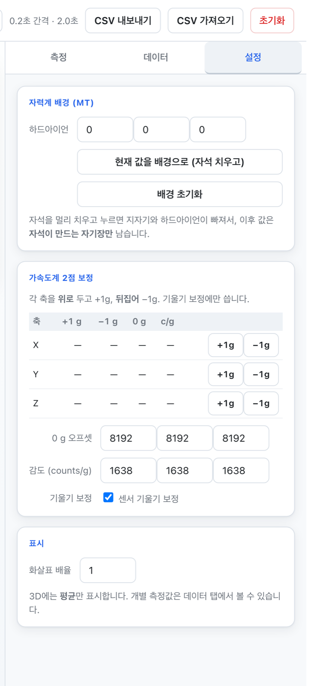
할 일
① 자석을 1 m 이상 멀리 치웁니다. 가방에 넣거나 다른 책상에 두세요.
② 현재 값을 배경으로 (자석 치우고) 를 누릅니다.
③ 실시간 값이 0 근처로 내려가면 성공입니다.
모든 측정값에 지구 자기장 약 50 µT가 섞여 들어갑니다. 나중에 거리 지수가 엉뚱하게 나옵니다. 측정을 시작하기 전에 반드시 하세요.
장치를 옮기거나 노트북 위치를 바꾸면 배경이 달라집니다. 그때는 다시 눌러 주세요. 같은 자리에서 계속 잰다면 한 번이면 됩니다.
4칸을 고르고 측정합니다
다시 측정 탭으로 돌아옵니다.
재고 싶은 칸을 클릭합니다.
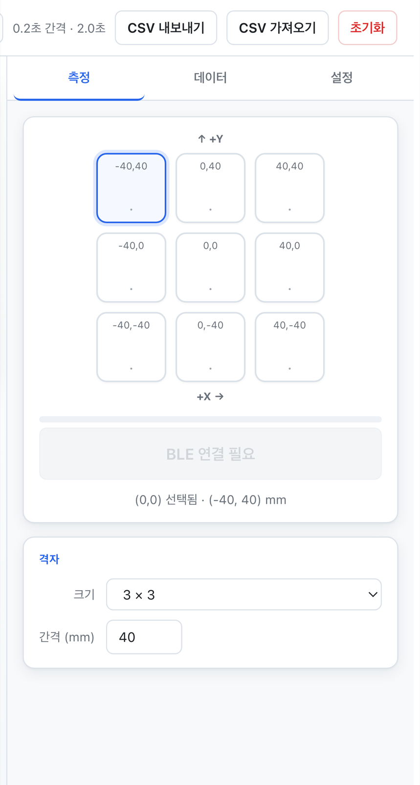
할 일
① 센서를 그 칸 위치에 놓습니다. 화면에서 고른 칸과 실제 센서 위치가 같아야 합니다.
② 화면에서 그 칸을 클릭합니다.
③ 아래 측정 버튼을 누릅니다. 2초 동안 10번 잽니다.
④ 칸 안에 값이 채워집니다.
손을 떼고 가만히 두세요. 센서를 건드리면 기울기 값이 흔들려서 데이터가 망가집니다. 지난번 자료에서 실제로 이렇게 망가진 칸이 있었습니다.
5아홉 칸을 다 채웁니다
센서를 옮기고 → 칸 클릭 → 측정. 이걸 9번 반복합니다.
순서를 지키세요 — 1 → 2 → 3 → 4 → 5 → 6 → 7 → 8 → 9
순서가 섞여도 데이터에는 좌표가 남지만, 빠뜨린 칸을 찾기 어려워집니다.
진행 상황은 데이터 탭에서 확인할 수 있습니다.
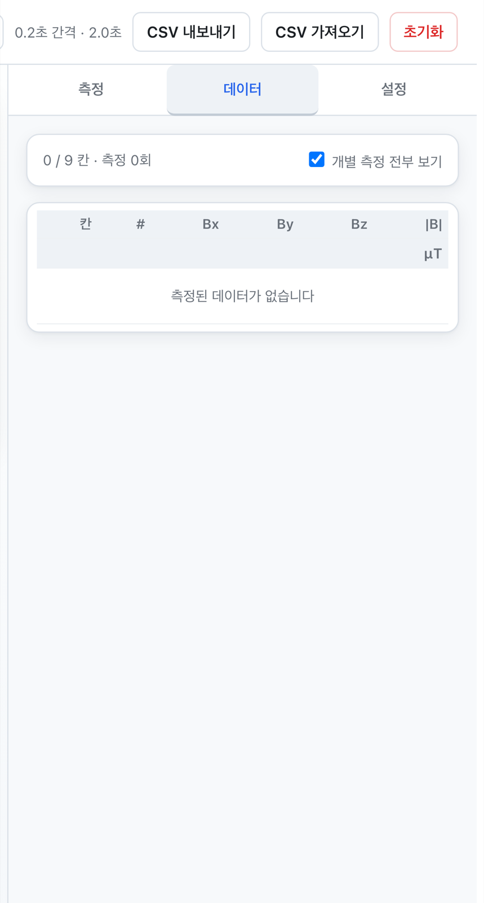
6CSV로 내보냅니다
9칸을 다 채웠으면 맨 위 오른쪽 CSV 내보내기를 누릅니다.
할 일 — CSV 내보내기 클릭 → 파일이 다운로드 폴더에 저장됩니다.
7파일 이름을 규칙대로 바꿉니다
이게 나중에 코랩에서 자동으로 읽히게 하는 핵심입니다.
거리_자석종류_번호_자석위치.csv
8cm_막대자석_1_m5.csv
│ │ │ └── 자석을 놓은 칸 (m1 ~ m9)
│ │ └───── 자석 번호 (여러 개면 구분)
│ └────────────── 자석 종류
└─────────────────── 센서–자석 거리| 파일 이름 | 뜻 |
|---|---|
6cm_막대자석_1_m1.csv | 6cm 거리, 자석을 1번 칸에 |
10cm_막대자석_1_m5.csv | 10cm 거리, 자석을 5번 칸에 |
8cm_막대자석_1_test.csv | 테스트용 — 자석 위치를 안 적음 |
나중에 어느 파일이 어느 조건인지 알 수 없게 됩니다. 측정이 끝나면 바로 이름을 바꾸세요. 나중에 하면 반드시 헷갈립니다.
오늘 측정할 것
거리 2가지 × 자석 위치 5군데 = 10개 파일입니다.
| 거리 | 자석 위치 | 파일 수 |
|---|---|---|
| 6 cm | m1 · m3 · m5 · m7 · m9 | 5개 |
| 10 cm | m1 · m3 · m5 · m7 · m9 | 5개 |
| 테스트 | 둘 중 아무 거리에서, 선생님이 몰래 정한 위치 1개 | |
장치는 이렇게 생겼습니다
2층 구조입니다. 위가 센서 판, 아래가 자석 판입니다.
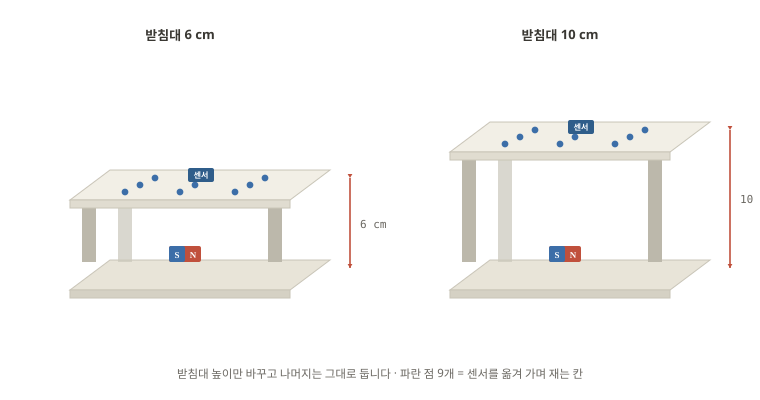
거리를 바꾸는 법
① 받침대를 6cm짜리로 바꿔 끼웁니다.
② 자로 재서 확인합니다 — 자석 윗면이 아니라 자석 중심에서 센서까지입니다.
③ 배경 보정을 다시 누릅니다. 장치를 건드렸으니까요.
거리를 80으로 넣느냐 90으로 넣느냐에 따라 지수가 2.90에서 3.37로 바뀝니다. 나중에 코랩에서 직접 확인해 볼 겁니다. 자로 정확히 재세요.
코랩에서 읽기
노트북이 이미 준비돼 있습니다. 아래를 누르면 코랩에서 바로 열립니다.
열면 이런 화면입니다. 왼쪽에 목차, 오른쪽에 코드와 결과가 있습니다.
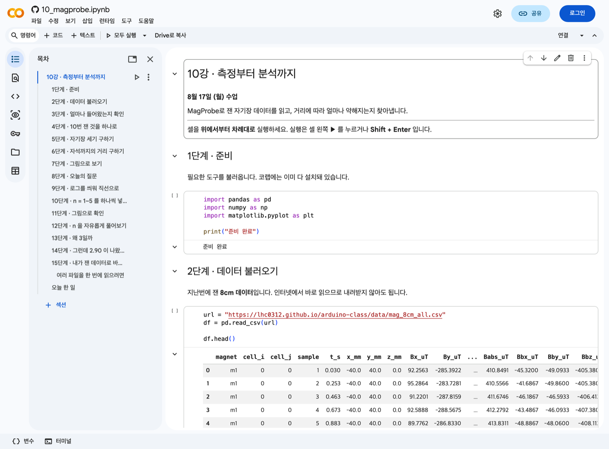
먼저 할 일 — 오른쪽 위 로그인으로 구글 계정에 들어간 뒤, 상단 Drive로 복사를 누르세요.
내 드라이브에 복사본이 생기고, 그때부터 내가 고치고 실행할 수 있습니다.
읽기 전용이라 실행이 안 됩니다. 코드를 고칠 수도 없습니다. 반드시 Drive로 복사를 먼저 누르세요.
아래는 노트북에 들어 있는 내용을 하나씩 설명한 것입니다. 코랩에서 직접 실행하면서 따라오세요.
1파일을 불러옵니다
합본 파일은 인터넷에서 바로 읽을 수 있습니다. 내려받지 않아도 됩니다.
import pandas as pd
import numpy as np
import matplotlib.pyplot as plt
url = "https://lhc0312.github.io/arduino-class/data/mag_8cm_all.csv"
df = pd.read_csv(url)
df.head()코랩에서는 이렇게 표로 나옵니다.
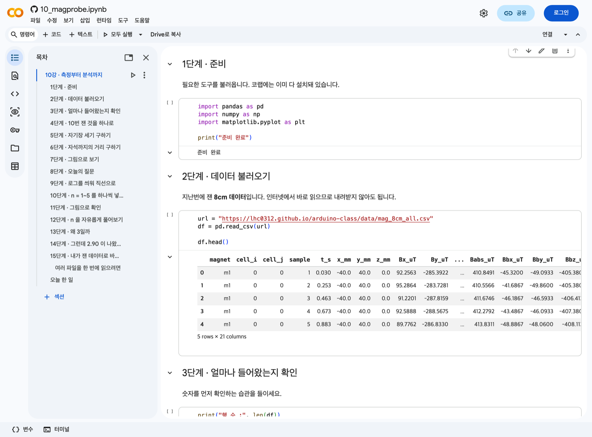
df.head() 는 앞의 5줄만 보여줍니다. 전체가 다 나오면 화면이 넘칩니다.2크기를 확인합니다
print("행 수 :", len(df))
print("자석 :", sorted(df["magnet"].unique()))
print("칸 수 :", df.groupby("magnet")[["cell_i","cell_j"]].nunique().iloc[0].to_dict())450줄 = 자석 5개 × 칸 9개 × 반복 10번입니다. 한 칸을 10번씩 잰 것이니, 이걸 하나로 줄여야 합니다.
3열이 무엇인지 봅니다
| 열 | 뜻 |
|---|---|
magnet | 자석을 놓은 칸 (합본에만 있음) |
cell_i cell_j | 센서를 놓은 칸 번호 (0~2) |
sample | 같은 칸에서 몇 번째 측정인지 (1~10) |
x_mm y_mm | 센서 위치 (mm) |
Bx_uT By_uT Bz_uT | 수평 보정된 자기장 |
Bbx_uT Bby_uT Bbz_uT | 센서 기준 자기장 — 오늘 쓸 것 |
Babs_uT | 자기장 크기 (둘 다 같은 값) |
Bb를 쓰나
B는 기울기를 보정한 값인데, 센서를 건드리면 그 보정이 흔들려서 오히려 값이 튑니다. Bb는 센서가 잰 날것이라 더 안정적입니다.
410번 잰 걸 하나로 줄입니다
같은 칸을 10번 쟀으니 대표값 하나로 만듭니다. 평균 대신 중앙값을 씁니다.
cell = (df.groupby(["magnet", "cell_i", "cell_j"])
.agg(x_mm=("x_mm", "first"),
y_mm=("y_mm", "first"),
Bx=("Bbx_uT", "median"),
By=("Bby_uT", "median"),
Bz=("Bbz_uT", "median"))
.reset_index())
print(len(cell), "줄")
cell.head()10번 중 한 번만 크게 튀어도 평균은 끌려갑니다. 중앙값은 가운데 값을 고르므로 튄 값 하나에 흔들리지 않습니다. 손이 닿아서 한 번 튀는 상황에 강합니다.
5자기장 세기를 구합니다
cell["B"] = np.sqrt(cell["Bx"]**2 + cell["By"]**2 + cell["Bz"]**2)
cell[["magnet", "x_mm", "y_mm", "B"]].head()6자석까지의 거리를 구합니다
자석 위치를 알아야 거리를 잽니다. 파일 이름의 m1·m3… 이 그 정보입니다.
# 자석을 놓은 칸의 좌표 (mm)
POS = {"m1": (-40, 40), "m2": (0, 40), "m3": (40, 40),
"m4": (-40, 0), "m5": (0, 0), "m6": (40, 0),
"m7": (-40, -40), "m8": (0, -40), "m9": (40, -40)}
DEPTH = 80.0 # 센서 판과 자석 사이 수직거리 (mm) — 8cm
cell["mx"] = cell["magnet"].map(lambda m: POS[m][0])
cell["my"] = cell["magnet"].map(lambda m: POS[m][1])
cell["r"] = np.sqrt((cell["x_mm"] - cell["mx"])**2
+ (cell["y_mm"] - cell["my"])**2
+ DEPTH**2)
print(f"거리 범위 : {cell['r'].min():.0f} ~ {cell['r'].max():.0f} mm")
print(f"세기 범위 : {cell['B'].min():.0f} ~ {cell['B'].max():.0f} µT")센서가 자석 바로 위에 있으면 80mm(=수직거리)이고, 대각선 끝에 있으면 139mm입니다. 한 번 측정에 9칸을 훑으니 거리 9가지가 한꺼번에 생깁니다.
7그림으로 봅니다
plt.figure(figsize=(6, 4))
plt.scatter(cell["r"], cell["B"], color="crimson")
plt.xlabel("distance r (mm)")
plt.ylabel("field strength |B| (uT)")
plt.grid(alpha=0.3)
plt.show()실행하면 그림이 코드 바로 아래에 그려집니다.
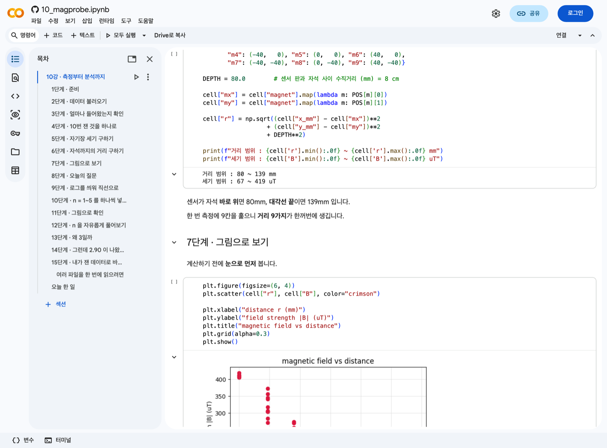
잠깐 · 학습과 테스트
회귀를 돌리기 전에 용어 세 개만 짚습니다. 머신러닝에서 계속 나옵니다.
| 용어 | 뜻 | 오늘의 예 |
|---|---|---|
| 학습 데이터 | 규칙을 찾는 데 쓰는 것 | m1·m3·m5·m7·m9 (위치를 앎) |
| 테스트 데이터 | 채점에만 쓰는 것 | 선생님이 몰래 놓은 자석 |
| 정답 | 테스트의 진짜 값 | 그 자석의 실제 위치 |
테스트 데이터는 학습에 쓰면 안 됩니다. 시험 문제를 미리 보고 공부하는 것과 같습니다. 점수는 잘 나오지만 실력은 알 수 없습니다.
거리 지수를 찾아봅시다
이제 오늘의 질문입니다.
자기장은 거리가 멀어질 때 얼마나 빨리 약해질까?
이렇게 생겼다고 가정합니다.
|B| = k / r ⁿ
r = 자석까지 거리
k = 자석의 세기 (상수)
n = 거리 지수 ← 이걸 찾는 것n을 1부터 5까지 하나씩 넣어 보고, 어느 값이 데이터와 가장 잘 맞는지 봅니다.
1양변에 로그를 씌웁니다
곡선은 직선보다 다루기 어렵습니다. 로그를 씌우면 직선이 됩니다.
|B| = k / r ⁿ
log|B| = log k − n · log r
↑ ↑ ↑
y = 절편 − n · x ← 직선!기울기가 곧 −n 입니다.
cell["log_r"] = np.log(cell["r"])
cell["log_B"] = np.log(cell["B"])
plt.figure(figsize=(6, 4))
plt.scatter(cell["log_r"], cell["log_B"], color="crimson")
plt.xlabel("log r")
plt.ylabel("log |B|")
plt.grid(alpha=0.3)
plt.show()점들이 직선에 가깝게 늘어서면 k/rⁿ 가정이 맞다는 뜻입니다.
2n = 1~5 를 하나씩 넣어 봅니다
n을 고정하고 k만 맞춘 뒤, 얼마나 안 맞는지(잔차) 잽니다.
r = cell["r"].to_numpy()
B = cell["B"].to_numpy()
for n in [1, 2, 3, 4, 5]:
# n 을 고정했을 때 가장 잘 맞는 k
k = np.exp(np.mean(np.log(B) + n*np.log(r)))
pred = k / r**n
err = np.sqrt(np.mean((np.log(pred) - np.log(B))**2))
print(f"n = {n} 잔차 = {err:.4f}")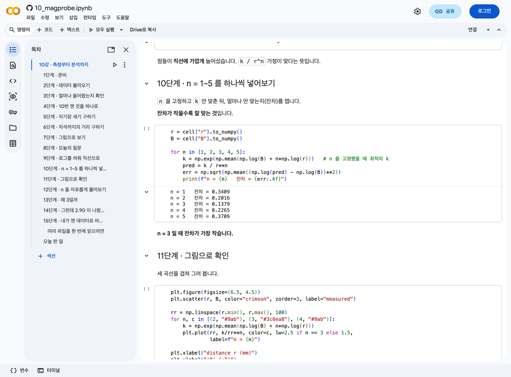
n = 3 일 때 잔차가 가장 작습니다.
3n을 자유롭게 풀어봅니다
1~5로 제한하지 말고 소수까지 찾아보면 얼마가 나올까요?
a, b = np.polyfit(cell["log_r"], cell["log_B"], 1)
print(f"기울기 = {a:.2f}")
print(f"→ n = {-a:.2f}")왜 3일까
이 값은 우연이 아닙니다. 물리 법칙이 예측한 값입니다.
자석은 N극과 S극이 한 쌍으로만 존재합니다. N극만 있는 자석은 없습니다.
극이 하나면 1/r², 극이 쌍이면 상쇄되어 1/r³. 자석은 항상 쌍이므로 n = 3 입니다.
그런데 2.90이 나왔습니다
이론은 3.00인데 측정은 2.90입니다. 0.10 차이를 어떻게 볼까요?
| 가능성 | 내용 | 방향 |
|---|---|---|
| 배경이 남음 | 배경 보정을 안 했거나 덜 됐으면, 멀리서 값이 덜 떨어져 n이 작아집니다 | n ↓ |
| 거리 재기 오차 | DEPTH를 실제보다 작게 잡으면 n이 달라집니다 | n ↕ |
| 자석 크기 | 자석이 점이 아니라 크기가 있으면 가까이서 n이 커집니다 | n ↑ |
| 측정 잡음 | 그냥 흔들림. 45점으로는 ±0.1 정도는 흔합니다 | n ↕ |
거리를 잘못 재면 어떻게 되나
DEPTH를 바꿔가며 n이 어떻게 변하는지 노트북에서 직접 확인할 수 있습니다.
for d in [70, 75, 80, 85, 90, 100]:
rr = np.sqrt((cell["x_mm"] - cell["mx"])**2
+ (cell["y_mm"] - cell["my"])**2 + d**2)
n = -np.polyfit(np.log(rr), np.log(cell["B"]), 1)[0]
print(f"DEPTH = {d:3d} mm -> n = {n:.2f}")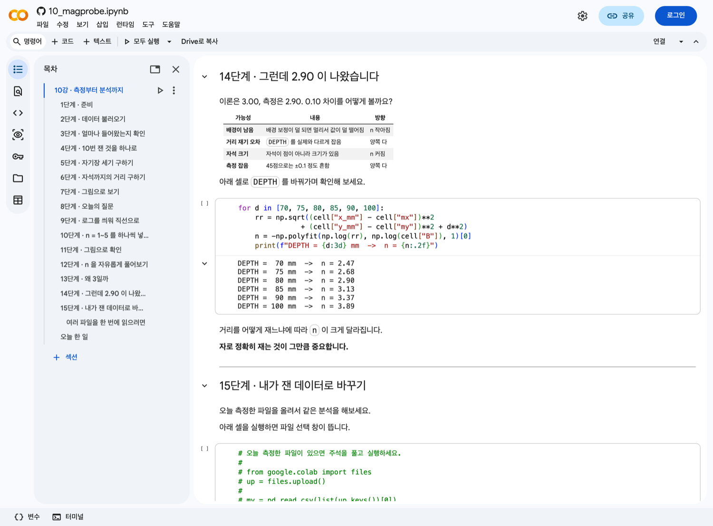
| DEPTH | 나오는 n |
|---|---|
| 70 mm | 2.47 |
| 75 mm | 2.68 |
| 80 mm | 2.90 ← 우리가 잰 값 |
| 85 mm | 3.13 |
| 90 mm | 3.37 |
| 100 mm | 3.89 |
분석이 아무리 정교해도 자로 잰 숫자가 틀리면 결과가 틀립니다. 거리를 10mm 잘못 재면 지수가 0.2 이상 달라집니다. 데이터 분석에서 가장 흔한 실수는 계산이 아니라 측정에서 나옵니다.
오늘 확인해 볼 것
① 배경 보정을 하고 잰 것과 안 하고 잰 것으로 각각 n을 구해 비교하세요.
② 자석 중심까지의 거리를 자로 정확히 재서 DEPTH에 넣어 보세요.
테스트 자석 맞히기
마지막입니다. 선생님이 몰래 놓은 자석의 위치를 맞혀 봅니다.
방법은 간단합니다. 가장 센 칸이 자석 바로 위입니다.
# 테스트 파일을 올린 뒤
from google.colab import files
files.upload()
test = pd.read_csv("8cm_막대자석_1_test.csv")
t = (test.groupby(["cell_i", "cell_j"])
.agg(x_mm=("x_mm","first"), y_mm=("y_mm","first"),
Bx=("Bbx_uT","median"), By=("Bby_uT","median"), Bz=("Bbz_uT","median"))
.reset_index())
t["B"] = np.sqrt(t["Bx"]**2 + t["By"]**2 + t["Bz"]**2)
best = t.loc[t["B"].idxmax()]
print(f"가장 센 칸 : ({best['x_mm']:.0f}, {best['y_mm']:.0f}) mm")
print(f"세기 : {best['B']:.0f} uT")추정을 먼저 적어두고 선생님께 정답을 물어보세요. 순서를 바꾸면 안 됩니다. 정답을 보고 나서 맞췄다고 하는 건 채점이 아닙니다.
도전 · 칸 사이에 있으면?
자석이 칸과 칸 사이에 있으면 "가장 센 칸" 방법은 못 맞힙니다. 9개 중 하나만 답할 수 있으니까요. 어떻게 하면 중간 위치도 맞힐 수 있을까요? (힌트: 9칸의 세기를 가중치로 써서 평균을 내면?)
마무리 체크리스트
데이터가 물리 법칙을 다시 알려줬습니다.
교과서에서 "자기장은 거리 세제곱에 반비례한다"고 읽는 것과,
직접 재서 n = 3을 찾아내는 것은 다릅니다.